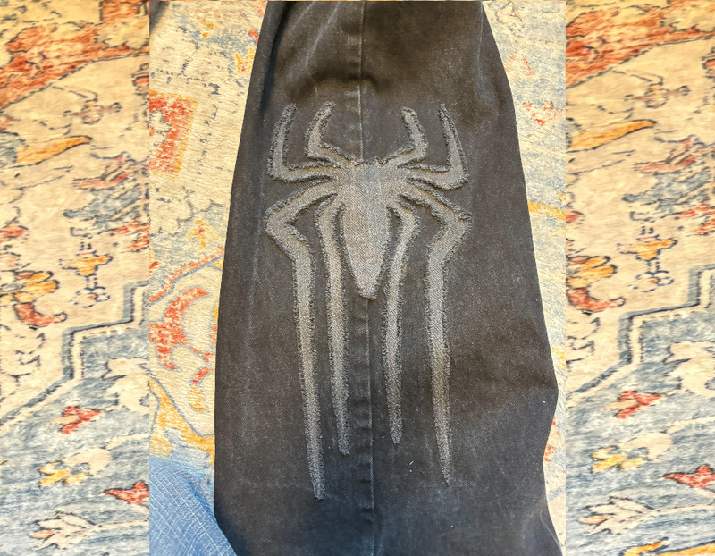

Fraying Fabric as a Design Choice
Date: April 15, 2025
I made this pair of jeans as a gift for my boyfriend's birthday. I started at superheroes- my boyfriend loves Marvel and DC, and he’s taught me about them over the years so I thought it would be fitting to make superhero themed jeans. I first thought about making comic panel themed jeans, overlaying comic strips onto a pair of jeans, but I quickly scrapped that idea as it would be too cluttered. Then, my idea moved onto individual superheroes. I drew up a few Batman designs, but none of them felt quite right. The Batman symbols were too complicated, and also putting the batmobile or a silhouette of Batman himself was kinda corny. I needed someone who had simple symbols that were recognizable. That’s when it hit me- SPIDERMAN!
I wanted to overlay spiders and spiderwebs on top of some jeans, but I couldn’t hem each edge- the symbols are simply too complicated. I couldn’t leave the edges raw? Could I..? I did some research and figured out that as long as I sewed each piece down with a straight stitch and a zigzag stitch to prevent it from unraveling, I could use the raw edges as part of the design! In fact, I could distress them so the edges of each symbol was fluffy with strands of fabric sticking out–I did just that. I cut each symbol out of gray denim and layered them on top of black denim panels. I sewed each symbol twice, using the straight stitch and the zigzag stitch both around a half an inch in so there would be enough fabric left out to distress. Then, I took a seam ripper, not to rip seams, but just to use the pointy edges to run all over the denim, destroying the weaving that held the fabric together to result in tufts of thread on the edge of each design.
